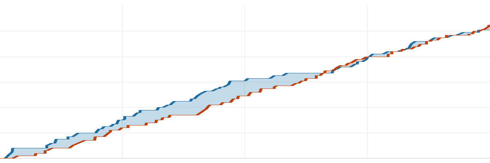
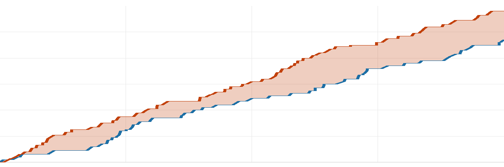

球不落·NBA 每日战报
2026-11-18美国时间
共 12 场 ｜ 每行格式：客队 比分 : 比分 主队
今天 12 场，最胶着的是灰熊 124-121 骑士：交替领先 22 次，打平 14 次，直到终场分差都没超过 5 分，灰熊一度落后 10 分。
焦点球星4 人
东契奇29分5板 7助·湖人 负 爵士
詹姆斯22分3板 6助·76人 胜 魔术
杜兰特21分2板 3助·火箭 胜 步行者
库里（未出场）勇士 负 独行侠
今日炸裂表现上榜1 人
三双 16分 12板 11助杰伦·约翰逊16分12板 11助· 老鹰 胜 雷霆
今日破纪录1 条
球星1 条
费尔斯 · 生涯首个三双· 活塞 122-109 鹈鹕
推荐比赛6 场
夯今日最胶着
| 1 | 2 | 3 | 4 |
| 分节 | 30-37 | 41-35 | 29-27 | 24-22 |
灰熊一度落后 10 分，翻盘赢 3 分。
| 灰熊 | 卡姆·斯宾塞26分1板7助·考沃德20分3板5助·布泽尔18分8板5助 |
| 骑士 | 米切尔34分4板3助·贾莱特·阿伦19分9板4助·海佐尼亚16分7板5助 |
|
命中率 |
三分 |
篮板 |
助攻 |
失误 |
| 灰熊 |
54 | 41 | 34 | 30 | 13 |
| 骑士 |
46 | 37 | 45 | 28 | 11 |
北京 08:00 开球 ｜ 灰熊 11-4 ｜ 骑士 8-8
夯值得看 · 落后 17 分翻盘
| 1 | 2 | 3 | 4 |
| 分节 | 30-24 | 31-25 | 19-31 | 21-25 |

凯尔特人掘金横轴为比赛进程
全场交替领先 15 次、打平 8 次，掘金最后阶段才拉开 4 分。
| 凯尔特人 | 塔图姆24分8板3助·克塔17分10板3助·普里查德15分1板2助 |
| 掘金 | 约基奇24分8板9助·穆雷21分7板2助·德罗赞18分2板2助 |
|
命中率 |
三分 |
篮板 |
助攻 |
失误 |
| 凯尔特人 |
41 | 25 | 46 | 22 | 16 |
| 掘金 |
44 | 23 | 46 | 19 | 18 |
北京 10:30 开球 ｜ 凯尔特人 11-4 ｜ 掘金 8-5
顶级值得看 · 交替领先 14 次
| 1 | 2 | 3 | 4 |
| 分节 | 29-23 | 20-24 | 29-32 | 25-20 |
全场交替领先 14 次、打平 10 次，奇才最后阶段才拉开 4 分。
| 奇才 | 安东尼·戴维斯25分14板2助·AJ·迪班萨23分12板2助·凯肖恩·乔治20分2板4助 |
| 猛龙 | 奎克利24分3板5助·巴特尔19分5板·贾科比·沃尔特18分7板6助 |
|
命中率 |
三分 |
篮板 |
助攻 |
失误 |
| 奇才 |
46 | 37 | 51 | 22 | 15 |
| 猛龙 |
42 | 39 | 41 | 27 | 8 |
北京 08:30 开球 ｜ 奇才 5-11 ｜ 猛龙 5-10
夯今日最大逆转
| 1 | 2 | 3 | 4 |
| 分节 | 27-40 | 37-29 | 28-28 | 29-19 |
全场交替领先 4 次、打平 3 次，76人最后阶段才拉开 5 分。
| 76人 | 恩比德26分6板7助·埃奇科姆24分8板6助·詹姆斯22分3板6助 |
| 魔术 | 瓦格纳27分8板11助·萨格斯18分8板4助·小温德尔·卡特15分8板3助 |
|
命中率 |
三分 |
篮板 |
助攻 |
失误 |
| 76人 |
52 | 40 | 38 | 27 | 12 |
| 魔术 |
52 | 51 | 37 | 31 | 11 |
北京 08:00 开球 ｜ 76人 13-3 ｜ 魔术 6-8
人上人值得看 · 交替领先 13 次
| 1 | 2 | 3 | 4 |
| 分节 | 29-34 | 27-20 | 22-22 | 31-21 |
全场交替领先 13 次、打平 14 次，爵士最后阶段才拉开 12 分。
| 爵士 | 基昂特·乔治30分1板10助·艾斯·贝利19分8板3助·米哈伊柳克15分3板5助 |
| 湖人 | 东契奇29分5板7助·格莱姆斯20分7板4助·塞克斯顿12分1助 |
|
命中率 |
三分 |
篮板 |
助攻 |
失误 |
| 爵士 |
48 | 38 | 45 | 29 | 23 |
| 湖人 |
38 | 27 | 42 | 24 | 18 |
北京 11:00 开球 ｜ 爵士 3-13 ｜ 湖人 13-3
人上人值得看 · 只差 5 分
| 1 | 2 | 3 | 4 |
| 分节 | 31-29 | 33-22 | 19-32 | 34-29 |
全场交替领先 5 次、打平 9 次，老鹰最后阶段才拉开 5 分。
| 老鹰 | 奥孔古28分9板2助·亚历山大-沃克19分4板7助·杰伦·约翰逊16分12板11助 |
| 雷霆 | 亚历山大34分5板3助·麦凯恩18分3板1助·阿贾伊·米切尔13分6板6助 |
|
命中率 |
三分 |
篮板 |
助攻 |
失误 |
| 老鹰 |
44 | 40 | 50 | 32 | 14 |
| 雷霆 |
51 | 35 | 43 | 30 | 14 |
北京 09:00 开球 ｜ 老鹰 9-6 ｜ 雷霆 9-6
其余 6 场按开球时间
拉赢 15 分，末节没缠斗
| 1 | 2 | 3 | 4 |
| 分节 | 39-28 | 23-18 | 31-30 | 26-28 |
火箭最多领先 21 分，最终赢 15 分。
| 火箭 | 杜兰特21分2板3助·谢泼德20分4板2助·小贾巴里·史密斯17分4板2助 |
| 步行者 | 西亚卡姆24分4板3助·乌布雷17分4板·昆顿·杰克逊15分2板3助 |
|
命中率 |
三分 |
篮板 |
助攻 |
失误 |
| 火箭 |
49 | 54 | 46 | 30 | 17 |
| 步行者 |
49 | 29 | 35 | 25 | 13 |
北京 08:00 开球 ｜ 火箭 12-4 ｜ 步行者 5-10
今日最佳一球
杰伊·赫夫 空中接力扣篮
火箭 119-104 步行者 · 第 4 节 剩 0:29
NPC只差 7 分，但全程没缠斗
| 1 | 2 | 3 | 4 |
| 分节 | 23-34 | 25-40 | 38-38 | 44-25 |
雄鹿末节打出 44-25，但前面落后太多，最终仍差 7 分。
| 雄鹿 | 库兹马26分5板1助·伯里斯20分7板1助·雅库乔尼斯20分3板5助 |
| 热火 | 字母哥27分14板9助·阿德巴约26分4板2助·戴维恩·米切尔24分2板6助 |
|
命中率 |
三分 |
篮板 |
助攻 |
失误 |
| 雄鹿 |
50 | 34 | 41 | 27 | 18 |
| 热火 |
50 | 46 | 37 | 28 | 20 |
北京 08:00 开球 ｜ 雄鹿 1-14 ｜ 热火 9-6
拉完了今日最平淡
| 1 | 2 | 3 | 4 |
| 分节 | 37-21 | 39-30 | 35-26 | 26-30 |
公牛最多领先 37 分，最终赢 30 分。
| 公牛 | 布泽利斯25分5板4助·吉迪18分14板9助·诺曼·鲍威尔17分2板5助 |
| 篮网 | 叶戈尔·杰明22分4板4助·兰德尔17分4助·小迈克·布朗15分1板4助 |
|
命中率 |
三分 |
篮板 |
助攻 |
失误 |
| 公牛 |
54 | 46 | 46 | 36 | 16 |
| 篮网 |
48 | 37 | 29 | 25 | 22 |
北京 08:30 开球 ｜ 公牛 4-10 ｜ 篮网 3-11
拉赢 13 分，末节没缠斗
| 1 | 2 | 3 | 4 |
| 分节 | 31-31 | 36-29 | 25-26 | 30-23 |
活塞最多领先 19 分，最终赢 13 分。
| 活塞 | 科林斯20分7板2助·杰文特·格林18分7板·詹金斯17分4板9助 |
| 鹈鹕 | 锡安24分7板1助·普尔22分1板5助·费尔斯16分5板4助 |
|
命中率 |
三分 |
篮板 |
助攻 |
失误 |
| 活塞 |
53 | 53 | 38 | 29 | 17 |
| 鹈鹕 |
46 | 39 | 37 | 23 | 16 |
北京 09:00 开球 ｜ 活塞 10-4 ｜ 鹈鹕 5-11
拉完了赢 22 分，全程没缠斗
| 1 | 2 | 3 | 4 |
| 分节 | 25-35 | 24-27 | 23-30 | 22-24 |

勇士独行侠横轴为比赛进程
独行侠最多领先 29 分，最终赢 22 分。
| 勇士 | 威尔·理查德20分3助·伦德博格13分5板4助·尼昂11分1板1助 |
| 独行侠 | 弗拉格33分5板9助·PJ·华盛顿21分5板2助·欧文17分6板5助 |
|
命中率 |
三分 |
篮板 |
助攻 |
失误 |
| 勇士 |
43 | 24 | 37 | 28 | 19 |
| 独行侠 |
51 | 41 | 42 | 34 | 20 |
北京 09:00 开球 ｜ 勇士 8-7 ｜ 独行侠 8-7
拉赢 21 分，末节没缠斗
| 1 | 2 | 3 | 4 |
| 分节 | 36-31 | 29-29 | 34-24 | 29-23 |
太阳最多领先 27 分，最终赢 21 分。
| 太阳 | 狄龙·布鲁克斯29分3板5助·布克29分2板6助·杰伦·格林18分7板7助 |
| 国王 | 小达里厄斯·阿卡夫36分4板6助·拉文18分5板2助·基根·穆雷12分7板3助 |
|
命中率 |
三分 |
篮板 |
助攻 |
失误 |
| 太阳 |
57 | 44 | 42 | 34 | 12 |
| 国王 |
47 | 35 | 40 | 29 | 16 |
北京 11:00 开球 ｜ 太阳 7-7 ｜ 国王 1-13
明日焦点
尼克斯@森林狼
北京时间 11月20日 09:00 ｜ 森林狼主场
NBA TV 全美直播；两边都赢得多（8胜6负 / 11胜4负）
战绩 8胜6负 / 11胜4负
另外这几场
勇士@灰熊北京时间 11月20日 09:00
快船@马刺北京时间 11月20日 09:00
开拓者@雄鹿北京时间 11月20日 09:00
明天全联盟 4 场，上述是值得关注场次
球不落 ｜ 每天一份 NBA 战报，只写场上发生的事
本文基于公开赛事数据独立撰写，与 NBA 及任何转播平台无关联。
比赛日 2026-11-18（美国时间）｜ 数据来源：ESPN